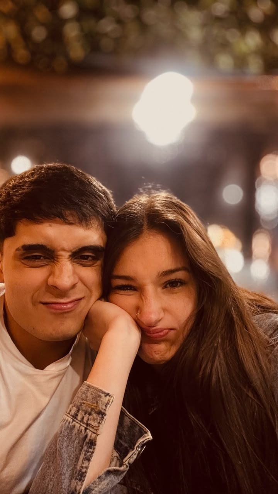
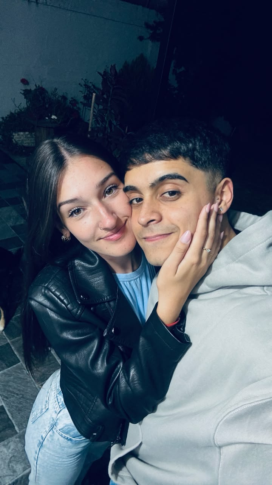
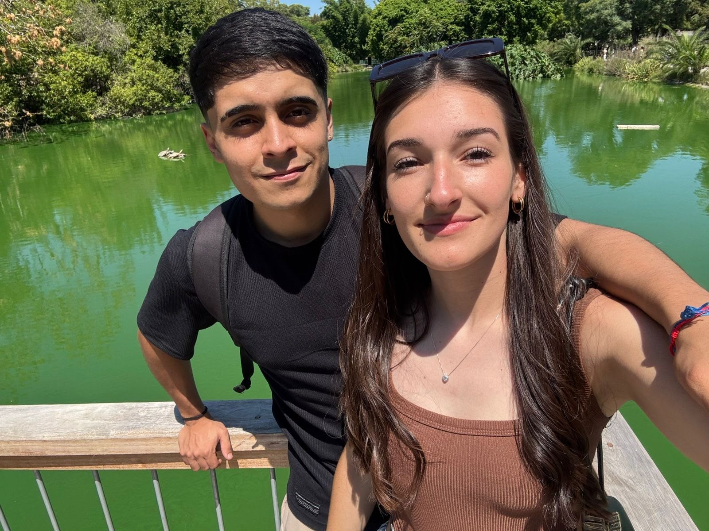
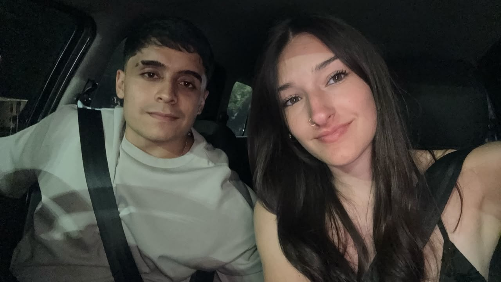
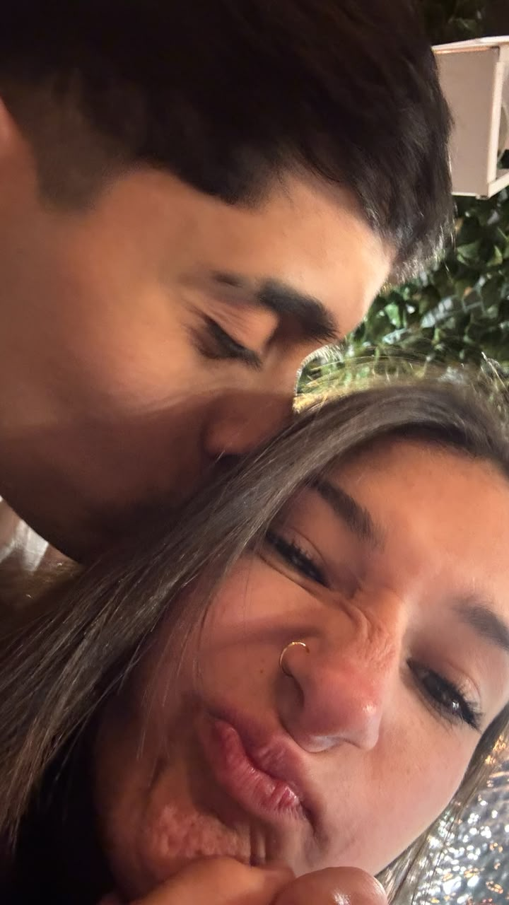
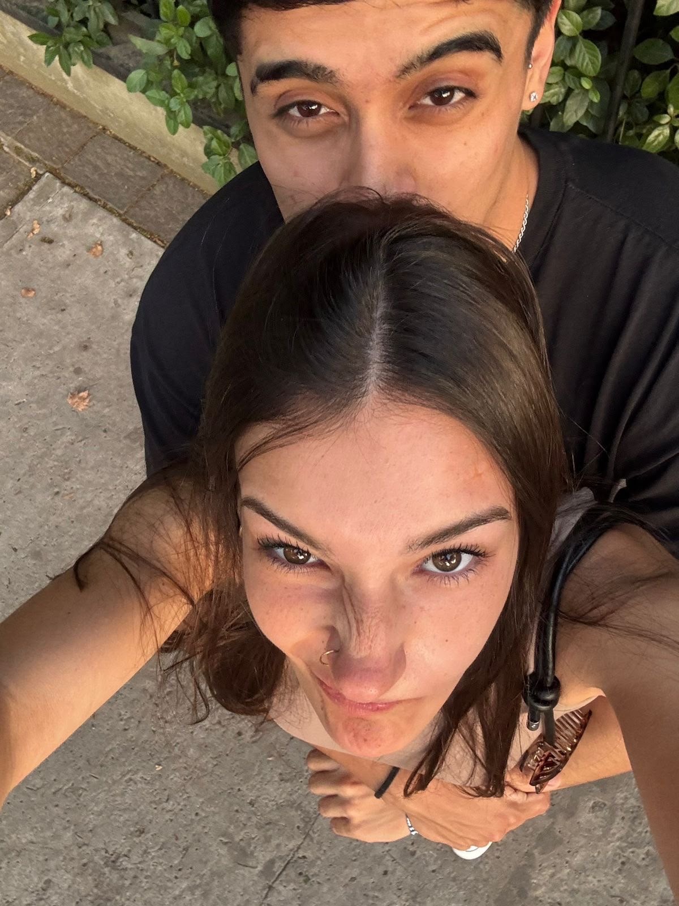
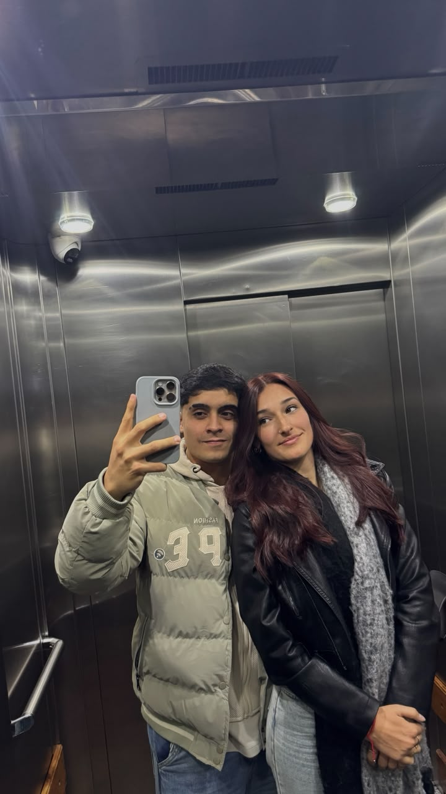
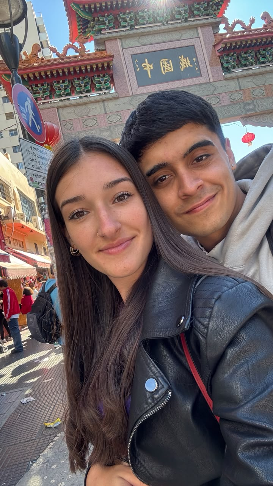

Una de nuestras primeras fotos
Ese dia se nos pasó el tiempo volando pero fue algo hermoso.
Para Delfi
Un pequeño viaje por nuestros recuerdos más lindos.
18 / 12 / 2025
El día que empezó todo
Nuestra historia
Desde el 18 de diciembre de 2025 hasta hoy, cada día sumó algo nuevo a nuestra historia. Esta página es un pequeño regalo: un álbum para recorrer juntos, las veces que quieras.
Todo empezó como esas historias que parecen casualidad, pero que después uno entiende que eran destino. Una conversación cualquiera, una sonrisa que se quedó dando vueltas, y de repente las ganas de hablar todos los días. Así, sin darnos cuenta, empezamos a construir algo hermoso.
El 18 de diciembre de 2025 decidimos que queríamos intentarlo, y desde ese día no paramos de sumar recuerdos. Esta es la primera página de muchas que vamos a escribir juntos.

Cada salida fue una pieza de nuestro rompecabezas para conocernos un poco más. Acá van algunos de esos primeros momentos que ya se sienten como recuerdos.

Ese dia se nos pasó el tiempo volando pero fue algo hermoso.

Un plan muy lindo donde pasamos todo un dia juntos.

Comimos unas hamburguesitas y paseamos por puerto madero.
Tocá cualquier foto para verla más grande. Algunos instantes merecen quedarse un poco más de tiempo en pantalla.




Una lista corta para algo tan grande. Cada vez que pienso en una razón, aparecen tres más.
Todavía no llegamos a 365 (¡vamos a tener toda la vida para completarlas!), pero acá van las primeras 181, que son los dias que estamos de novios.
Las fechas que marcaron estos seis meses. Tocá cada una para ver la foto y el recuerdo.
El día que nos vimos en ese bar comimos una hamburguesita y hablamos por horas.
El dia mas lindo y que mas nervioso estuve con vos
El primero de muchos, fuimos a puerto madero con una noche hermosa.
Lo celebramos a nuestra manera, simple pero con mucho amor.
Y acá estamos, celebrando medio año juntos con esta pequeña carta digital.
No sé qué nos va a deparar el tiempo, pero sí sé que quiero seguir descubriéndolo con vos. Quiero más charlas hasta tarde, más viajes, más risas, más días comunes que se vuelven especiales solo porque estás vos.
Esto recién empieza, y no podría imaginar mejor compañera para todo lo que falta.
Esto es solo el comienzo de nuestra historia.